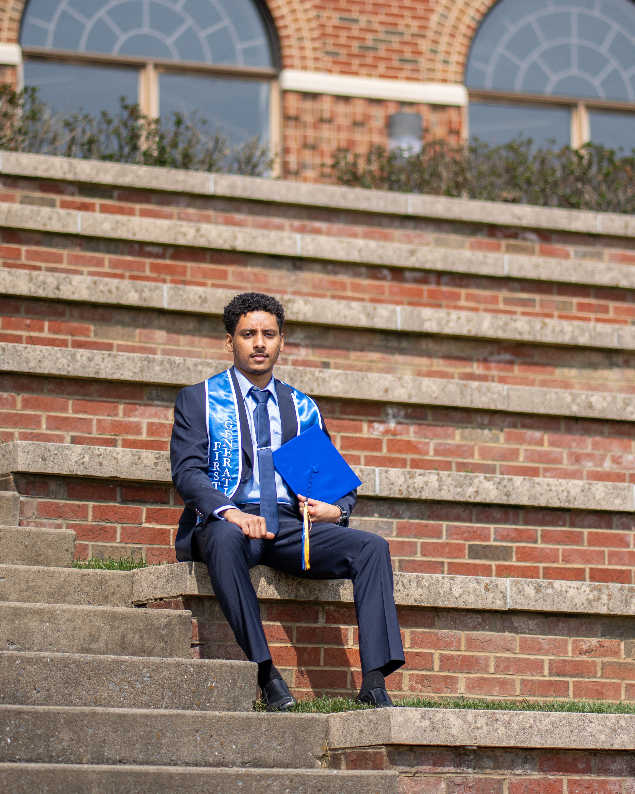
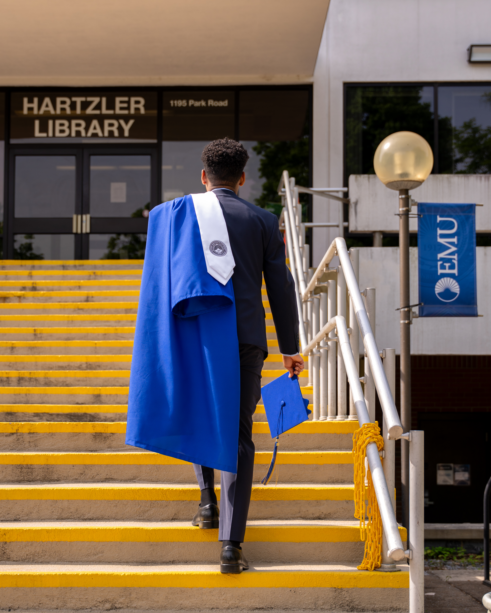
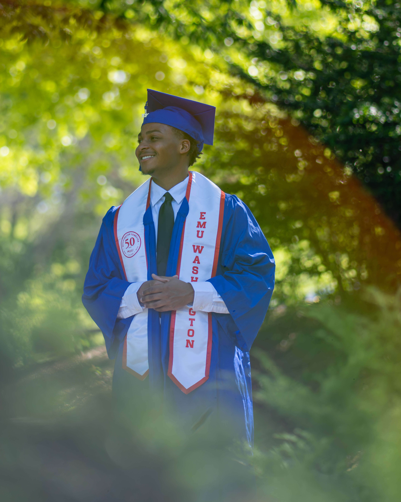
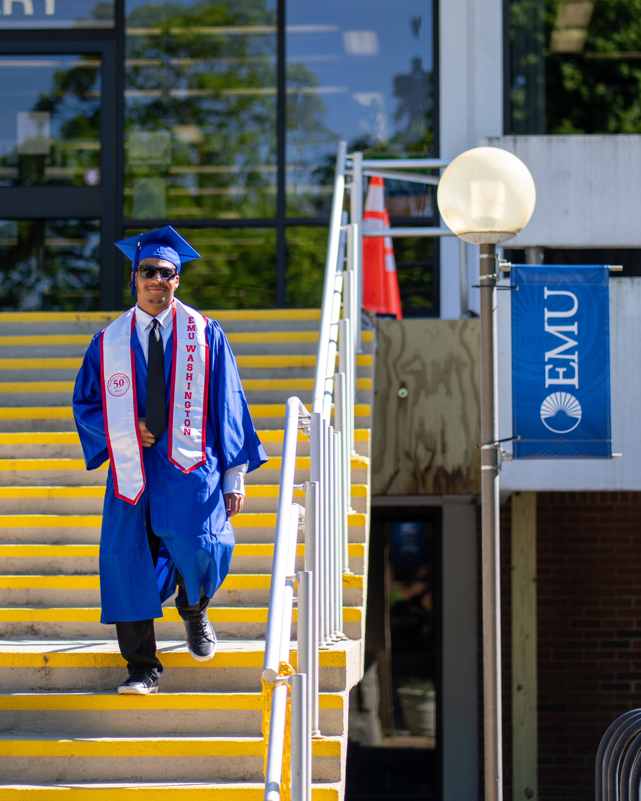

Graduation Images
This project involved capturing graduation portraits for graduating students to celebrate an important milestone in their academic journey. I was responsible for planning and photographing each session, creating natural, polished images that reflected each graduate's personality while delivering professional, high-quality portraits they could cherish for years.










1 / 4
Click an image to view full screen
Next project
Portraits →